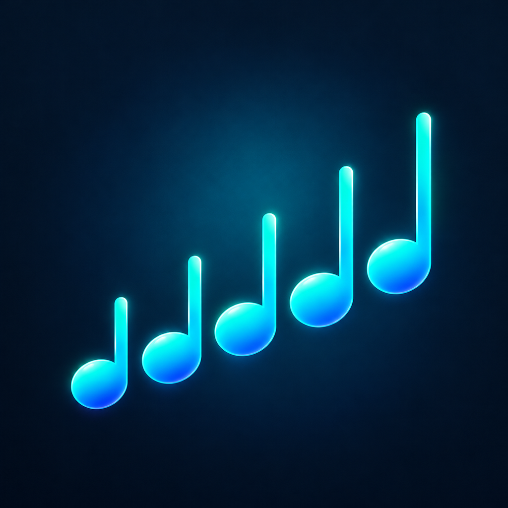

Écoutez et jouez
Découvrez les gammes de jazz et leur sonorité. Choisissez votre instrument pour obtenir la notation adaptée.

Pour iPhone et iPad
De la gamme à votre propre phrase : écoutez des gammes, créez des motifs et pratiquez-les sur différents degrés et dans différentes tonalités.
Découvrez iScales
Découvrez les gammes de jazz et leur sonorité. Choisissez votre instrument pour obtenir la notation adaptée.
Saisissez des notes et des silences dans l’éditeur. Affichez et pratiquez une phrase sur tous les degrés et dans toutes les tonalités.
Jouez des arpèges et des motifs sur des progressions ii–V–I. Exportez des partitions dans plusieurs tonalités au format PDF.
Essayez gratuitement les gammes ionienne et dorienne en Do. Pro débloque toutes les gammes, toutes les tonalités et l’export PDF.
Achat unique. Sans abonnement. Sans frais récurrents.
L’app affiche le prix dans votre devise avant l’achat.
Une question sur iScales ou un problème ? Contactez Klaus Storck : trumpetbug@gmail.com. Pour un problème technique, indiquez votre appareil, la version d’iOS et celle de l’app.
Ouvrez les réglages et sélectionnez l’option de restauration des achats. Utilisez le compte Apple avec lequel vous avez acheté Pro.
Également par nous
Pratiquez l’harmonie jazz en jouant.
Voir iChanges sur l’App Store